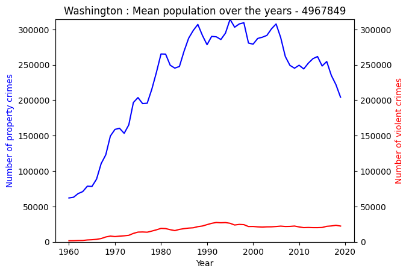
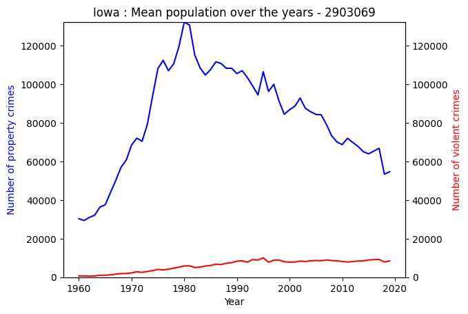
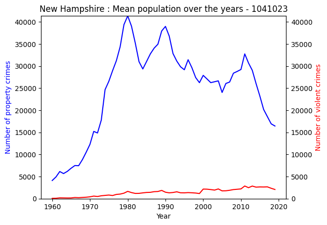
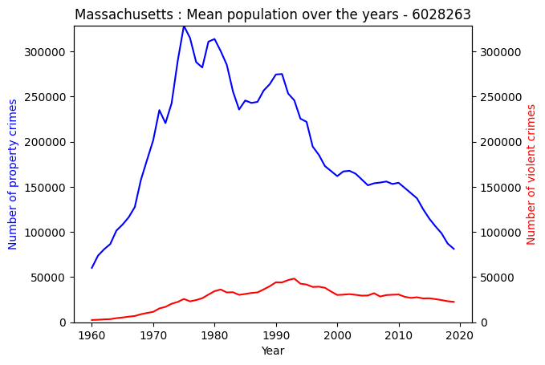
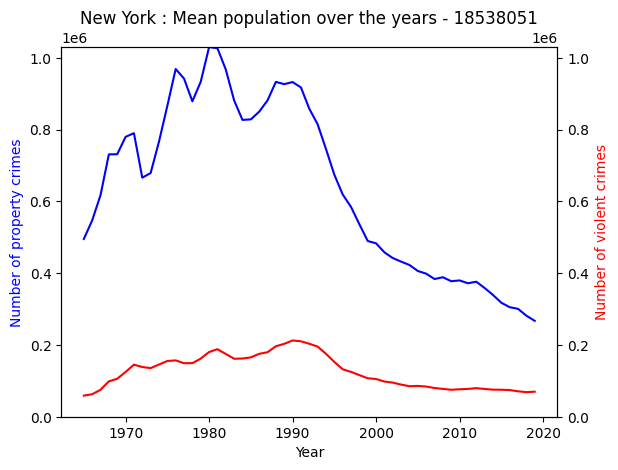
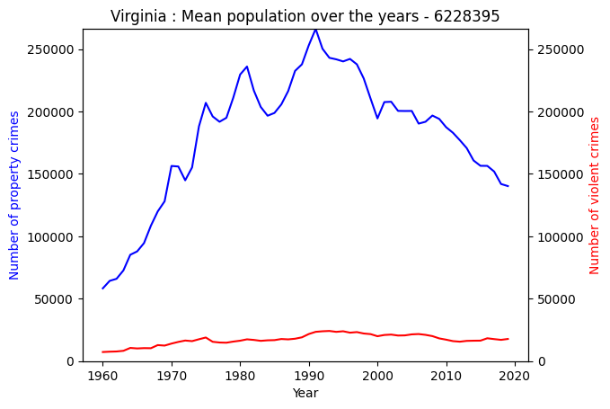
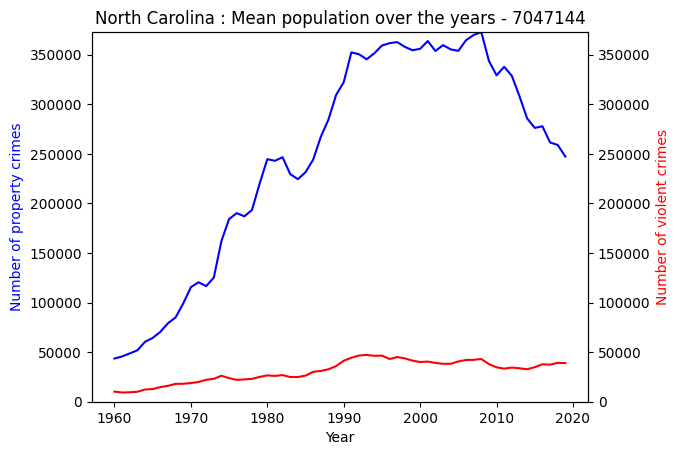
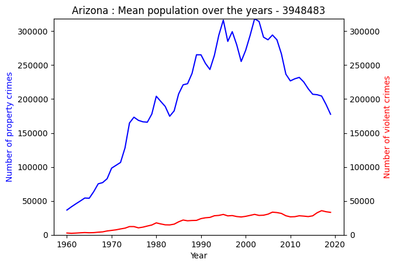

import pandas as pd
from sklearn.preprocessing import LabelEncoder
import matplotlib.pyplot as plt
import numpy as np
import matplotlib.pyplot as plt
crime_data = pd.read_csv('/home/jovyan/DH140-Final-Project/state_crime.csv')– title: “Crime in United States” description: “This blogpost is analyzing crimes in US states over range of years” author: “Anush Tadevosyan” date: “07/26/2023”
Introduction
For this project, I have chosen to work with the dataset that contains information about various crimes in US states for a wide range of years
Link to Dataset: https://corgis-edu.github.io/corgis/csv/state_crime/
I have chosen this dataset as I was always interested in crime stories, documentaries and statistics. I am curious to see what I can find. My end goal is to find the safest state and the most dangerous state in terms of crimes and try to predict which state will be safest in future and which state will be more dangerous in future using machine learning!
To-DO : see which state had highest type of crime per year
Data Presentation & Exploration
Basic Information: The dataset classify crimes into two groups: property & violent crime.Property crime refers to burglary, larceny, and motor related crime while violent crime refers to assault, murder, rape, and robbery. These reports go from 1960 to 2019. With this in mind, let’s understand and explore our data.
The dataset has 21 columns and 3115 rows. We can see that the years of data goes from 1960 to 2019. We can also see that half of data is for years 1990-2019. If we look at overall rate of the two major types of crimes (property & violent)
It should include at least 4 exploratory data visualizations
#total data summary
crime_data.describe()| Year | Data.Population | Data.Rates.Property.All | Data.Rates.Property.Burglary | Data.Rates.Property.Larceny | Data.Rates.Property.Motor | Data.Rates.Violent.All | Data.Rates.Violent.Assault | Data.Rates.Violent.Murder | Data.Rates.Violent.Rape | Data.Rates.Violent.Robbery | Data.Totals.Property.All | Data.Totals.Property.Burglary | Data.Totals.Property.Larceny | Data.Totals.Property.Motor | Data.Totals.Violent.All | Data.Totals.Violent.Assault | Data.Totals.Violent.Murder | Data.Totals.Violent.Rape | Data.Totals.Violent.Robbery | |
|---|---|---|---|---|---|---|---|---|---|---|---|---|---|---|---|---|---|---|---|---|
| count | 3115.000000 | 3.115000e+03 | 3115.000000 | 3115.000000 | 3115.000000 | 3115.000000 | 3115.000000 | 3115.000000 | 3115.000000 | 3115.000000 | 3115.000000 | 3.115000e+03 | 3.115000e+03 | 3.115000e+03 | 3.115000e+03 | 3.115000e+03 | 3.115000e+03 | 3115.000000 | 3115.000000 | 3115.000000 |
| mean | 1989.544141 | 9.708502e+06 | 3542.202311 | 876.532520 | 2322.659133 | 343.011300 | 397.877047 | 237.365040 | 6.477207 | 30.179872 | 123.853258 | 3.560081e+05 | 8.977698e+04 | 2.275827e+05 | 3.864856e+04 | 4.594917e+04 | 2.659748e+04 | 663.911717 | 3034.240449 | 15653.541894 |
| std | 17.299570 | 3.506750e+07 | 1418.191397 | 446.531611 | 897.934463 | 221.654068 | 287.498896 | 159.336737 | 5.886449 | 16.694626 | 143.261882 | 1.321823e+06 | 3.376635e+05 | 8.460659e+05 | 1.469896e+05 | 1.759960e+05 | 1.032963e+05 | 2437.666178 | 11714.612850 | 60348.473626 |
| min | 1960.000000 | 2.261670e+05 | 573.100000 | 126.300000 | 293.300000 | 28.400000 | 9.500000 | 3.600000 | 0.200000 | 0.800000 | 1.900000 | 3.147000e+03 | 7.510000e+02 | 1.489000e+03 | 1.780000e+02 | 3.700000e+01 | 1.400000e+01 | 1.000000 | 6.000000 | 8.000000 |
| 25% | 1975.000000 | 1.279156e+06 | 2472.650000 | 535.000000 | 1663.800000 | 185.600000 | 217.200000 | 124.000000 | 3.100000 | 18.500000 | 42.700000 | 3.974500e+04 | 9.613500e+03 | 2.619500e+04 | 3.227000e+03 | 3.318000e+03 | 2.056000e+03 | 48.000000 | 328.000000 | 816.500000 |
| 50% | 1990.000000 | 3.358000e+06 | 3438.400000 | 796.600000 | 2275.700000 | 288.900000 | 342.200000 | 205.100000 | 5.400000 | 28.800000 | 93.800000 | 1.092840e+05 | 2.703800e+04 | 7.142300e+04 | 9.468000e+03 | 1.154800e+04 | 6.755000e+03 | 186.000000 | 931.000000 | 3256.000000 |
| 75% | 2005.000000 | 6.082836e+06 | 4439.100000 | 1133.850000 | 2877.500000 | 437.200000 | 518.250000 | 319.350000 | 8.400000 | 39.800000 | 152.800000 | 2.253325e+05 | 5.562000e+04 | 1.461155e+05 | 2.124150e+04 | 2.880400e+04 | 1.756700e+04 | 464.000000 | 1930.000000 | 8337.000000 |
| max | 2019.000000 | 3.282395e+08 | 9512.100000 | 2906.700000 | 5833.800000 | 1839.900000 | 2921.800000 | 1557.600000 | 80.600000 | 161.600000 | 1635.100000 | 1.296112e+07 | 3.795200e+06 | 8.142228e+06 | 1.661738e+06 | 1.932274e+06 | 1.135607e+06 | 24703.000000 | 139815.000000 | 687732.000000 |
#first major crime group summary: property
crime_data['Data.Totals.Property.All'].describe()count 3.115000e+03
mean 3.560081e+05
std 1.321823e+06
min 3.147000e+03
25% 3.974500e+04
50% 1.092840e+05
75% 2.253325e+05
max 1.296112e+07
Name: Data.Totals.Property.All, dtype: float64#second major crime group summary: property
crime_data['Data.Totals.Violent.All'].describe()count 3.115000e+03
mean 4.594917e+04
std 1.759960e+05
min 3.700000e+01
25% 3.318000e+03
50% 1.154800e+04
75% 2.880400e+04
max 1.932274e+06
Name: Data.Totals.Violent.All, dtype: float64Descriptive Statistics: We can clearly see that the number of violent crimes over a period of time, over all the states is higher than the number of property crimes
corr_year_property_crime = crime_data['Year'].corr(crime_data['Data.Totals.Property.All'])
corr_year_property_crime0.030803762684870506corr_year_violent_crime = crime_data['Year'].corr(crime_data['Data.Totals.Violent.All'])
corr_year_violent_crime0.062184163818709594Correlations: To-Do
missing_values_cd = crime_data.isnull()
missing_values_count = missing_values_cd.sum()
print(missing_values_count)State 0
Year 0
Data.Population 0
Data.Rates.Property.All 0
Data.Rates.Property.Burglary 0
Data.Rates.Property.Larceny 0
Data.Rates.Property.Motor 0
Data.Rates.Violent.All 0
Data.Rates.Violent.Assault 0
Data.Rates.Violent.Murder 0
Data.Rates.Violent.Rape 0
Data.Rates.Violent.Robbery 0
Data.Totals.Property.All 0
Data.Totals.Property.Burglary 0
Data.Totals.Property.Larceny 0
Data.Totals.Property.Motor 0
Data.Totals.Violent.All 0
Data.Totals.Violent.Assault 0
Data.Totals.Violent.Murder 0
Data.Totals.Violent.Rape 0
Data.Totals.Violent.Robbery 0
dtype: int64Missing Values: We can see that we have no missing values in our dataset by the result of the above cell!
label_encoder = LabelEncoder()
crime_data['State_Encoded'] = label_encoder.fit_transform(crime_data['State'])
state_encoding_mapping = dict(zip(label_encoder.classes_, label_encoder.transform(label_encoder.classes_)))print(state_encoding_mapping){'Alabama': 0, 'Alaska': 1, 'Arizona': 2, 'Arkansas': 3, 'California': 4, 'Colorado': 5, 'Connecticut': 6, 'Delaware': 7, 'District of Columbia': 8, 'Florida': 9, 'Georgia': 10, 'Hawaii': 11, 'Idaho': 12, 'Illinois': 13, 'Indiana': 14, 'Iowa': 15, 'Kansas': 16, 'Kentucky': 17, 'Louisiana': 18, 'Maine': 19, 'Maryland': 20, 'Massachusetts': 21, 'Michigan': 22, 'Minnesota': 23, 'Mississippi': 24, 'Missouri': 25, 'Montana': 26, 'Nebraska': 27, 'Nevada': 28, 'New Hampshire': 29, 'New Jersey': 30, 'New Mexico': 31, 'New York': 32, 'North Carolina': 33, 'North Dakota': 34, 'Ohio': 35, 'Oklahoma': 36, 'Oregon': 37, 'Pennsylvania': 38, 'Rhode Island': 39, 'South Carolina': 40, 'South Dakota': 41, 'Tennessee': 42, 'Texas': 43, 'United States': 44, 'Utah': 45, 'Vermont': 46, 'Virginia': 47, 'Washington': 48, 'West Virginia': 49, 'Wisconsin': 50, 'Wyoming': 51}Encoding Categorical Values: Above, we encoded the variable state as later, it might be useful when doing time-series analysis, maybe using additional data related to states etc
# See how much data per state, can the dataset be skewed? how many rows per state?
number_of_rows_for_state = []
list_of_state_names = []
for key,value in state_encoding_mapping.items():
list_of_state_names.append(key)
key_data = crime_data[crime_data['State'] == key]
number_of_rows_for_state.append(key_data.shape[0])
plt.bar(state_encoding_mapping.values(),number_of_rows_for_state)
plt.xlabel('State')
plt.ylabel('Number of rows (info) for state')
plt.title('States and Number of Rows for them')
plt.show()

As we can see, there are 60 entries per state (besides New York) so we don’t have to worry about data being skewed or bias (disproportionally many rows for a state). I don’t consider 5 less entries to be bias for the purposes of this research
# Scatter plot: Property crimes vs Year vs Encoded States
plt.figure(figsize=(10, 6))
plt.scatter(crime_data['Year'], crime_data['Data.Totals.Property.All'], c=crime_data['State_Encoded'], cmap='viridis')
plt.colorbar(label='Encoded State')
plt.xlabel('Year')
plt.ylabel('Property Crime Rates')
plt.title('Scatter Plot: Year vs. Property Crime Numbers with Encoded State')
plt.show()
# Scatter plot: Violent crimes vs Year vs Encoded States
plt.figure(figsize=(10, 6))
plt.scatter(crime_data['Year'], crime_data['Data.Totals.Violent.All'], c=crime_data['State_Encoded'], cmap='viridis')
plt.colorbar(label='Encoded State')
plt.xlabel('Year')
plt.ylabel('Property Crime Rates')
plt.title('Scatter Plot: Year vs. Violent Crime Numbers with Encoded State')
plt.show()
plt.figure(figsize=(12, 8))
crime_data[['Data.Rates.Property.All', 'Data.Rates.Violent.All']].boxplot()
plt.title('Box Plot: Property Crime Rates vs. Violent Crime Rates')
plt.ylabel('Rates per 100,000 population')
plt.xticks([1, 2], ['Property Crime Rates', 'Violent Crime Rates'])
plt.show()Data Disrtibution & Outliers: Through scatter plots, call them outliers or states with significant crime, we can see that total number of violent crimes and total number of property crimes is significantly larger in one of the state, which is in this group - ‘South Carolina’: 40, ‘South Dakota’: 41, ‘Tennessee’: 42, ‘Texas’: 43, ‘United States’: 44, ‘Utah’: 45, ‘Vermont’: 46, ‘Virginia’: 47, ‘Washington’: 48, ‘West Virginia’: 49, ‘Wisconsin’: 50, ‘Wyoming’: 51 Through analysis later, we will figure out which state exactly that is.
Through box plot, we can see that over the years and over the states, the rate of property crimes is larger than the rate of violent crimes (rates per 100,000 population). This is interesting to keep in mind. We can also see that there is a fair amount of outliers for both of the crime rate, which suggests that there has been years and states, where during those years, that specific state was an “exception” compared to others and had a higher crime rate. Note that the outliers for violent crime rates are more tightly stacked together, suggesting that the rate of violent crimes faced way more exceptions than the rate of property crimes
Analysis
Now, let’s dive into our analysis. In order to get an answer for our final question, we will answer a set of related questions to help us guide to the final answer
Draft Plan 1. For each state, what is the type of crime commited the most per year given in the dataset? Property or violence? 2. For each state, what is the rate of crimes commited (property or violent) per 100,000 people? (make a visualization) 3.What is the overall mean property crime and violent crime rate for each state? 4. Start filtering out the states. Based on our analsysis, which state is the safest state and the most dangerous state? (make a visulization) 5. What state will be the safest in future and most dangerous in future? (use naive bayes prediction and maybe for crime rate comparison) 6. Support findings with article analyzations (web scraping and analyze those articles using sentiment analysis) (make a visulization)
Let us discover what is the group of crime (property or violence) commited the most (in terms on numbers, not rate) in every year in our dataset per state. Hence, we will be looking at 52 graphs.
# make a list of state names from crime_data
state_name_list = crime_data['State'].tolist()
# get rid of duplicates
state_name_list = list(set(state_name_list))
#TO-DO: put these graphs all together in smaller size (tightlayout)
for state in state_name_list:
state_data = crime_data[crime_data['State'] == state]
plt.plot(state_data['Year'], state_data['Data.Totals.Property.All'], label='Number of property crimes', color='blue')
plt.xlabel('Year')
plt.ylabel('Number of property crimes', color='blue')
ax2 = plt.gca().twinx()
ax2.plot(state_data['Year'], state_data['Data.Totals.Violent.All'], label='Number of violent crimes', color='red')
ax2.set_ylabel('Number of violent crimes', color='red')
plt.title(f'{state}')
plt.show()





















To-DO: analyze the findings per each state - short summary
Question #2: To-DO - make a tight layout
# Question #3:
# How did overall crime rate change over time?
#(take the mean of crime numbers (total violent and total property)
#in year X for each state and make a graph) -
#x is year and y is number of crimes.
#is America getting more dangerous? (make a visulization)
state_list = crime_data['State'].unique()
year_list = crime_data['Year'].unique()
state_average_data = {}
for state in state_list:
total_property_rate = 0
total_violent_rate = 0
for year in year_list:
state_year_data = crime_data[(crime_data['State'] == state) & (crime_data['Year'] == year)]
if not state_year_data.empty: #new york lacks some years
total_property_rate += state_year_data['Data.Totals.Property.All'].iloc[0]
total_violent_rate += state_year_data['Data.Totals.Violent.All'].iloc[0]
average_property_rate = total_property_rate / len(year_list)
average_violent_rate = total_violent_rate / len(year_list)
state_average_data[state] = {'Average_Property_Total': average_property_rate, 'Average_Violent_Total': average_violent_rate}
print(state_average_data)
{'Alabama': {'Average_Property_Total': 136768.5, 'Average_Violent_Total': 18508.666666666668}, 'Alaska': {'Average_Property_Total': 20261.5, 'Average_Violent_Total': 3019.5333333333333}, 'Arizona': {'Average_Property_Total': 197824.86666666667, 'Average_Violent_Total': 19911.033333333333}, 'Arkansas': {'Average_Property_Total': 78616.93333333333, 'Average_Violent_Total': 10001.683333333332}, 'California': {'Average_Property_Total': 1208911.4166666667, 'Average_Violent_Total': 178274.26666666666}, 'Colorado': {'Average_Property_Total': 146760.38333333333, 'Average_Violent_Total': 13687.4}, 'Connecticut': {'Average_Property_Total': 103832.43333333333, 'Average_Violent_Total': 9536.616666666667}, 'Delaware': {'Average_Property_Total': 26798.433333333334, 'Average_Violent_Total': 3519.0333333333333}, 'District of Columbia': {'Average_Property_Total': 38926.46666666667, 'Average_Violent_Total': 10208.016666666666}, 'Florida': {'Average_Property_Total': 618748.6833333333, 'Average_Violent_Total': 92006.7}, 'Georgia': {'Average_Property_Total': 267742.1, 'Average_Violent_Total': 31531.683333333334}, 'Hawaii': {'Average_Property_Total': 50483.583333333336, 'Average_Violent_Total': 2509.116666666667}, 'Idaho': {'Average_Property_Total': 31387.916666666668, 'Average_Violent_Total': 2468.8}, 'Illinois': {'Average_Property_Total': 419136.35, 'Average_Violent_Total': 71362.3}, 'Indiana': {'Average_Property_Total': 189577.03333333333, 'Average_Violent_Total': 19014.233333333334}, 'Iowa': {'Average_Property_Total': 82625.78333333334, 'Average_Violent_Total': 6069.05}, 'Kansas': {'Average_Property_Total': 90718.7, 'Average_Violent_Total': 8476.583333333334}, 'Kentucky': {'Average_Property_Total': 93422.66666666667, 'Average_Violent_Total': 9916.483333333334}, 'Louisiana': {'Average_Property_Total': 166274.36666666667, 'Average_Violent_Total': 25214.483333333334}, 'Maine': {'Average_Property_Total': 31184.75, 'Average_Violent_Total': 1462.2333333333333}, 'Maryland': {'Average_Property_Total': 182855.31666666668, 'Average_Violent_Total': 31413.85}, 'Massachusetts': {'Average_Property_Total': 190894.58333333334, 'Average_Violent_Total': 26613.083333333332}, 'Michigan': {'Average_Property_Total': 373326.38333333336, 'Average_Violent_Total': 51955.13333333333}, 'Minnesota': {'Average_Property_Total': 142725.1, 'Average_Violent_Total': 10470.266666666666}, 'Mississippi': {'Average_Property_Total': 71379.55, 'Average_Violent_Total': 7701.033333333334}, 'Missouri': {'Average_Property_Total': 194511.08333333334, 'Average_Violent_Total': 25464.9}, 'Montana': {'Average_Property_Total': 27897.966666666667, 'Average_Violent_Total': 1889.2666666666667}, 'Nebraska': {'Average_Property_Total': 50064.21666666667, 'Average_Violent_Total': 4168.283333333334}, 'Nevada': {'Average_Property_Total': 59584.083333333336, 'Average_Violent_Total': 9304.75}, 'New Hampshire': {'Average_Property_Total': 24746.95, 'Average_Violent_Total': 1386.05}, 'New Jersey': {'Average_Property_Total': 250409.31666666668, 'Average_Violent_Total': 30264.333333333332}, 'New Mexico': {'Average_Property_Total': 68482.88333333333, 'Average_Violent_Total': 9776.683333333332}, 'New York': {'Average_Property_Total': 586752.9333333333, 'Average_Violent_Total': 114974.15}, 'North Carolina': {'Average_Property_Total': 246830.16666666666, 'Average_Violent_Total': 30799.833333333332}, 'North Dakota': {'Average_Property_Total': 14100.9, 'Average_Violent_Total': 705.55}, 'Ohio': {'Average_Property_Total': 376886.11666666664, 'Average_Violent_Total': 37474.316666666666}, 'Oklahoma': {'Average_Property_Total': 120534.76666666666, 'Average_Violent_Total': 13305.216666666667}, 'Oregon': {'Average_Property_Total': 129653.21666666666, 'Average_Violent_Total': 10191.533333333333}, 'Pennsylvania': {'Average_Property_Total': 284103.1666666667, 'Average_Violent_Total': 39508.666666666664}, 'Rhode Island': {'Average_Property_Total': 34552.76666666667, 'Average_Violent_Total': 2691.516666666667}, 'South Carolina': {'Average_Property_Total': 138643.0, 'Average_Violent_Total': 22546.833333333332}, 'South Dakota': {'Average_Property_Total': 15684.533333333333, 'Average_Violent_Total': 1378.2833333333333}, 'Tennessee': {'Average_Property_Total': 176231.88333333333, 'Average_Violent_Total': 27627.833333333332}, 'Texas': {'Average_Property_Total': 769527.7666666667, 'Average_Violent_Total': 87850.6}, 'United States': {'Average_Property_Total': 9257655.883333333, 'Average_Violent_Total': 1194983.4166666667}, 'Utah': {'Average_Property_Total': 74449.88333333333, 'Average_Violent_Total': 4367.433333333333}, 'Vermont': {'Average_Property_Total': 14435.9, 'Average_Violent_Total': 619.5}, 'Virginia': {'Average_Property_Total': 181328.58333333334, 'Average_Violent_Total': 17226.883333333335}, 'Washington': {'Average_Property_Total': 228140.98333333334, 'Average_Violent_Total': 17172.583333333332}, 'West Virginia': {'Average_Property_Total': 35292.183333333334, 'Average_Violent_Total': 3684.1}, 'Wisconsin': {'Average_Property_Total': 146787.65, 'Average_Violent_Total': 10252.45}, 'Wyoming': {'Average_Property_Total': 14278.95, 'Average_Violent_Total': 1061.45}}